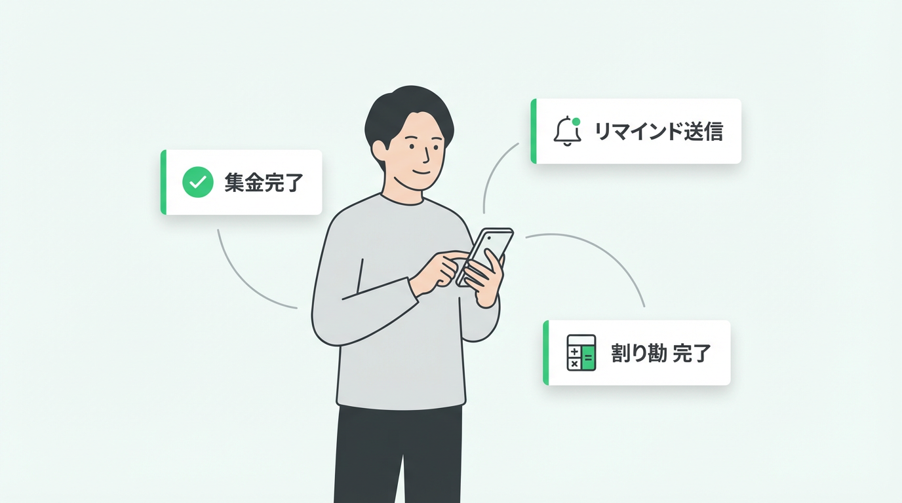
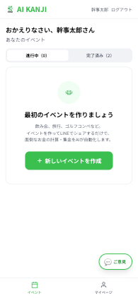
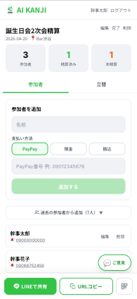
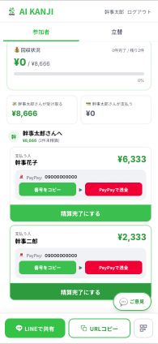
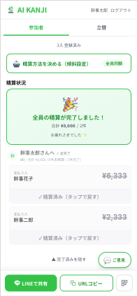

幹事の面倒な仕事を、LINEで全自動化。
立替計算・AI傾斜設定・集金リマインド
幹事の頑張りが、次の思い出の種になる。
アプリのインストール不要
誰がいくら、現金かPayPayか銀行振込か。バラバラな支払い方法を突き合わせるだけで、夜が更けていく。
友達に「早く払って」って言いにくい。かといって立替えたまま泣き寝入りするのも釈然としない。
先輩多め、幹事引き、新人は少なめ。ルール決めのすり合わせと計算で毎回時間が溶けていく。

URLをLINEでシェアするだけ。参加者は届いたURLから自分で登録できる。

参加者がURLから登録。出欠・支払い方法の確認が自動で完了する。

立替計算・AI傾斜設定・集金リマインドがすべて自動。幹事は当日を楽しむだけ。
面倒なだけだった幹事を、ちゃんと報われる役割へ。イベント作成や精算完了でポイントが貯まり、提携店のクーポンやギフト券と交換できる、新しい仕組みを準備中です。
※ 2026年10月〜 Phase 3 で提供開始予定
